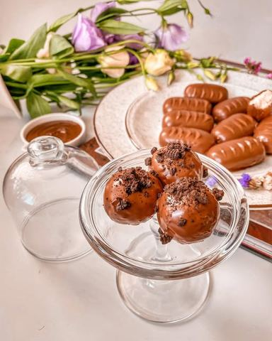

Moja beleška
SačuvanoSastojci
Priprema
••Promešajte suve sastojke pa u činiju sipajte nemućenu slatku pavlaku. Povezite ručno, da se sve lepo poveže i sjedini pa ostavite u frižideru bar nekih sat vremena kako bi se smesa stegla i bila pogodna za pravljenje oblika po želji. Potom istopite 200 gr neke kvalitetne mlečne čokolade ili kombinaciju mlečne i noissete u kojom ćete prekriti čokoladice. U istopljenu i prohladjenu čokoladu dodati jednu do dve kašike ulja, promešati i uz pomoć viljuške zaroniti čokoladice. Lupkanjem viljuške o ivicu činije otresite višak čokolade, pa ih redjajte na neki poslužavnik koji ste odložili pek papirom. Vratite ih na pola sata u frižider kako bi se lepo stegle pa uzivajte uz šoljicu kafe ili obradujte nekoga ko voli kokos, što da ne ☺️
Originalni opis sa Instagrama
Bounty čokoladice 🥥🌸 Lično, nisam neki zaljubljenik u kokos, ove čokoladice sam prvi put pravila da obradujem tatu , ali se ispostavilo da ih sada svi obozavamo 🤗 Posle hladjenja u frižideru, smesa se lepo stegne i dobra je za oblikovanje, tako da možete praviti bounty kuglice, čokoladice, kockice, zabavite se u kuhinji 🤗 •••••Recept •200 gr kokosa •100 gr mleka u prahu •100 gr šećera u prahu •100 ml slatke nemućene pavlake •200 gr kvalitetne mlečne čokolade ••Promešajte suve sastojke pa u činiju sipajte nemućenu slatku pavlaku. Povezite ručno, da se sve lepo poveže i sjedini pa ostavite u frižideru bar nekih sat vremena kako bi se smesa stegla i bila pogodna za pravljenje oblika po želji. Potom istopite 200 gr neke kvalitetne mlečne čokolade ili kombinaciju mlečne i noissete u kojom ćete prekriti čokoladice. U istopljenu i prohladjenu čokoladu dodati jednu do dve kašike ulja, promešati i uz pomoć viljuške zaroniti čokoladice. Lupkanjem viljuške o ivicu činije otresite višak čokolade, pa ih redjajte na neki poslužavnik koji ste odložili pek papirom. Vratite ih na pola sata u frižider kako bi se lepo stegle pa uzivajte uz šoljicu kafe ili obradujte nekoga ko voli kokos, što da ne ☺️ 🤗 Uzivajte u vikendu 🌸🌸🌸 • • • #vikendjetu #dezert #slatkisi #bounty #bountycokoladice #kokos #kokoscokoladice #dezertsakokosom #ukusnoilepo #napravisam #obradujnekoga #uzivaj #samoneznopremasebi